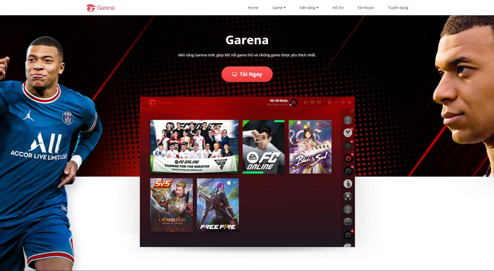
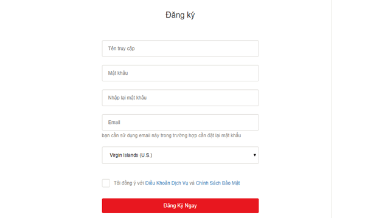
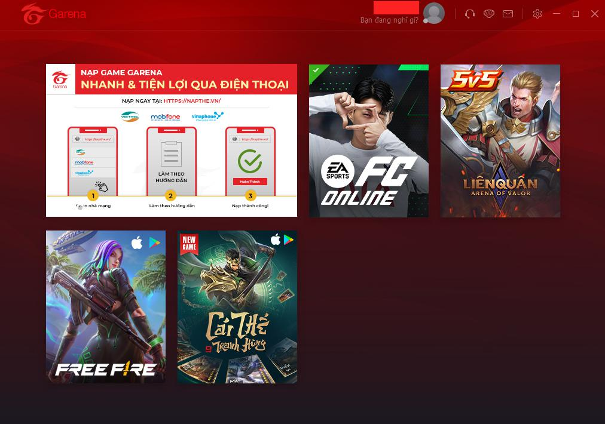
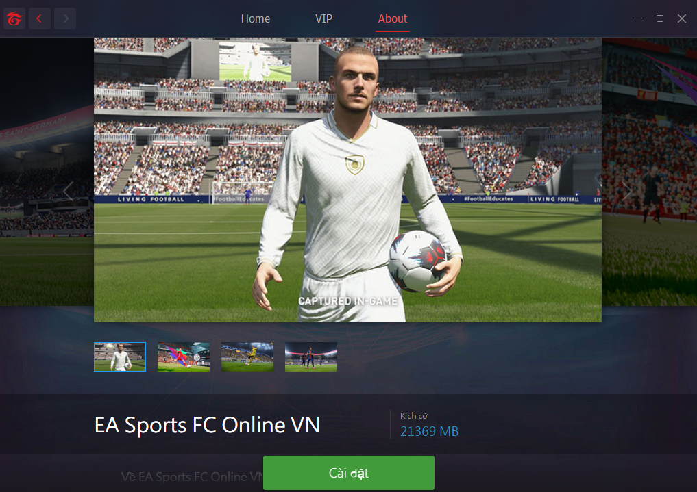
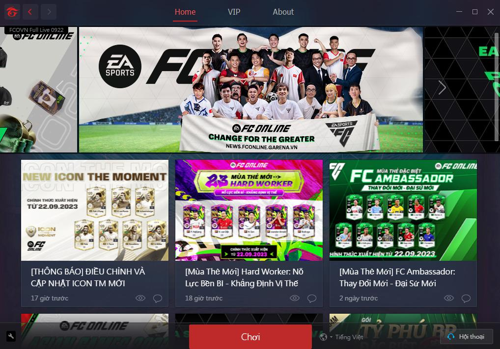

1.HƯỚNG DẪN TẢI FC ONLINE TRÊN PC
CÁCH 1: TẢI VÀ CÀI ĐẶT THÔNG QUA GARENA PC
Bước 1: Bạn lên Google gõ Garena rồi tải về

Bước 2: Đăng nhập vào ứng dụng Garena (tạo tài khoản nếu như bạn chưa có)

Bước 3: Nhấp vào tựa game FC Online và bắt đầu tiến hành cài đặt


Bước 4: Nhấp vào nút “Chơi” và bắt đầu hòa mình vào thế giới bóng đá sôi động của FC Online nhé.
